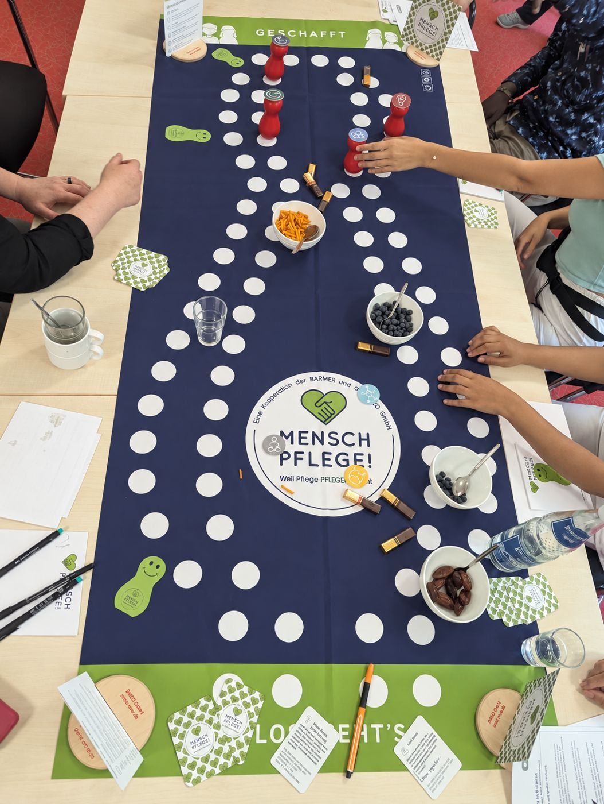
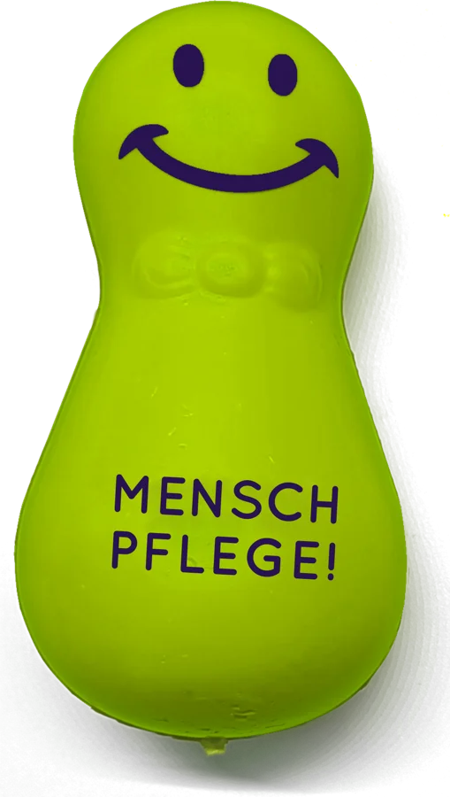
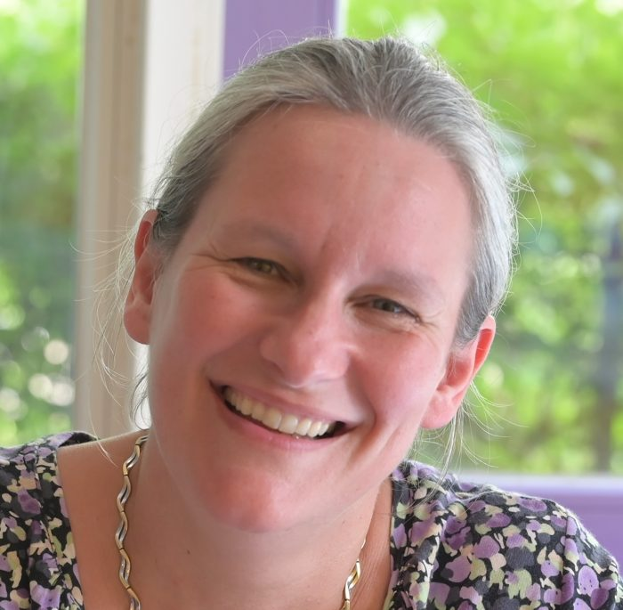

Ein Modellvorhaben
MENSCH PFLEGE!
Pflegekräfte tragen tagtäglich viel Verantwortung – und die Belastungen im Pflegesektor nehmen weiter zu. MENSCH PFLEGE! setzt genau hier an: Das Modellvorhaben entwickelt, erprobt und evaluiert neue Wege der betrieblichen Gesundheitsförderung für Pflegende in stationären Pflegeeinrichtungen. Ziel ist es, die Resilienz der Mitarbeitenden zu stärken – für Teams, Führungskräfte und im besten Fall in der gesamten Einrichtung.
Gleichzeitig sollen Maßnahmen zur Verhaltens- und Verhältnisprävention stattfinden, die sowohl das individuelle Verhalten als auch die Arbeitsbedingungen und Strukturen der Einrichtungen verbessern.
Angesprochen sind alle Pflegekräfte sowie die Führungskräfte; bei Bedarf werden auch weitere Berufsgruppen einbezogen.


„Das Konzept des playful BGF greift im Kern etwas Grundsätzliches auf: Menschen spielen gerne. Spielen ist positiv besetzt: Ich bin neugierig, ich möchte schauen, wie das funktioniert, ich möchte mich ausprobieren. Diese Erkenntnis zu nutzen und im Rahmen der betrieblichen Gesundheitsförderung einzusetzen, das hat schon einen ganz neuen Charakter.“
Die 3 Häuser der stationären Pflege
Feedback aus den Einrichtungen
Resilienzspiel und Play2change©
Die Intervention
Im Mittelpunkt steht der Einsatz des bewährten Resilienzspiels MENSCH DENK AN DICH®, ausgezeichnet mit dem Innovationspreis des Bundesverbandes BGM e. V. Das Resilienzspiel ist eingebettet in die dafür eigens von SMEO entwickelte Methode Play2change©, die die Ergebnisse und psychologischen Effekte des Spielens in eine Veränderungsagenda überführt. Die Play2change© Workshops sind systematisch in einen vollständigen Prozess der Betrieblichen Gesundheitsförderung eingebettet.
In drei stationären Pflegeeinrichtungen unterschiedlicher Bundesländer durchläuft jede Einrichtung drei Schritte:
Kick-off und Ist-Analyse
Gemeinsame Ziele festlegen, ein Steuerungsgremium bilden und im Visionsworkshop ein Zukunftsbild entwickeln. Belastungen und Ressourcen werden erhoben.
Lösungsfindung und Umsetzung
Im Lösungsworkshop fließen die Ergebnisse der Analyse ins Spiel ein. Daraus entstehen konkrete Maßnahmen, die begleitet umgesetzt werden.
Veränderung und Verstetigung
Lern- und Experimentierräume erproben neue, resiliente Arbeitsweisen. Ein Veränderungsworkshop unterstützt dabei, das Neue dauerhaft im Alltag zu verankern.
In den gesamten Prozess werden fünf thematisch unterschiedliche Play2change© Workshops integriert. Erfahrene Prozessberaterinnen begleiten die Einrichtungen vor Ort über die gesamte Interventionsphase.
Die Prozessberatung
Eindrücke der BGM-Expertinnen
„MENSCH PFLEGE! ist in Bad Waldsee genau zum richtigen Zeitpunkt eingeführt worden und hat spürbar neue Energie in die Einrichtung gebracht. So wurde die Position der Wohnbereichsleitung (WBL) wieder etabliert und mit engagierten Personen besetzt. Zudem wurde eine regelmäßige Kommunikationsstruktur im Rahmen der Übergaben zwischen allen Bereichen (einmal monatlich) eingeführt. Ich persönlich bin sehr angetan von der schnellen und konsequenten Umsetzung. Also in Summe eine tolle Sache für die Einrichtung!“
Prozessberaterin Bad Waldsee
„Im Haus Elbwiesen sind die Spieleworkshops der Kern des Projekt MENSCH PFLEGE! Dabei begegnen sich Teams oder Führungskräfte kommunikativ noch einmal ganz anders: entspannter, direkter, mit Leichtigkeit. Die Beteiligten haben sichtbar Spaß daran, mehr übereinander zu erfahren, Berufsgrenzen zu überwinden und Ideen zu kreieren, auf die sie bei herkömmlichem Vorgehen nie gekommen wären. Diese besondere Stimmung hält über das Spiel hinaus an und kann auch später bei der Umsetzung wieder abgerufen werden.“
Prozessberaterin Dresden
„Der größte Zauber von MENSCH PFLEGE! passiert im Pflegewohnheim am Kreuzberg nicht auf dem Spielbrett, sondern zwischen den Kolleg*innen. Spielerisch kommen sie ins Gespräch und entdecken dabei Gemeinsamkeiten und Stärken aneinander, die im Arbeitsalltag untergehen. Im Spiel werden gezielt die Themen und Herausforderungen des Arbeitsalltags aufgegriffen. So entsteht ein Nährboden aus Vertrauen, Gemeinsamkeit und Ideen, um gemeinsam Lösungsansätze zu entwickeln und den Mut zu finden, diese im Alltag zu erproben.“

Anika AbelProzessberaterin Berlin
Wissenschaftlich begleitet
Die Evaluation
Die Wirkung der Intervention wird wissenschaftlich überprüft. Die Evaluation verbindet quantitative und qualitative Daten und betrachtet sowohl kurzfristige als auch mittelfristige Effekte – auf der Ebene des Verhaltens der Mitarbeitenden ebenso wie auf der Ebene der Arbeitsverhältnisse. Sie folgt anerkannten wissenschaftlichen Gütekriterien und wird durch eine externe wissenschaftliche Begleitung unabhängig geprüft. Die Ergebnisse aller drei Einrichtungen werden abschließend in einer Zusammenschau ausgewertet.
Die Ergebnisse der Evaluation werden mit Projektende im Oktober 2027 veröffentlicht. Darüber hinaus wird es ein erprobtes Vorgehensmodell für die Intervention in Einrichtungen der stationären Altenpflege geben – zusammengefasst in einem praxisnahen Handlungsleitfaden. So können künftig weitere Pflegeeinrichtungen von den Erfahrungen profitieren und den Ansatz zielgerichtet und wirksam selbst einsetzen.
Die Leitung
Kooperationspartnerinnen
Dr. Irene Preußner
Projektleitung MENSCH PFLEGE!
Geschäftsführerin SMEO GmbH
Ines Rathmer
Koordinatorin MENSCH PFLEGE!
Fachreferentin BARMER